- About
- Diary
- People
- Events
- Reading
- Writing
- Meals
- Meetings
- Search

1834, Jan. 1. W.Necromancers, p. 156. Notre Dame, p. 466, fin. Mrs Hamilton dines; adv. H Caunter & S Gent. 55 / 66
2. Th. Necromancers, p. 158/2. T Campbel calls: J Jones au soir: Call on miss Northcote. 53 / 63
3. F.Necromancers, p. 158. Coquette, p. 71.Museum; Paulus Joviuse. T Campbel sups. 52 ½ / 66 ½
4. Sa.Necromancers, p. 159. Coquette, p. 177. Museum; Wieruse. Lethargye. 56 / 65
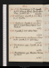Jan. 5. Su. Necromancers, p. 161/2. Coquette, p. 300. Call on La. Stepney; adv. La. Sophia Sidney: Jas White sups. 53 ½ / 66 ½
6. M.Exchequere. Coquette, p. 335; Vol. II, p. 97. N Gat tea. 56 / 64
7. Tu. Exchequere. Coquette, p. 250. Call on Roberts, Bedford, Hudson & Hume: meet Hardwick. 56 / 67
8. W. Coquette, p. 318. Call on Douce. 54 / 66
9. Th.Necromancers, çala. Museum; P Camerariuse. Coquette, p. 357. M W S dines. 55 ½ / 67
10. F.Necromancers, çala. Coquette, Vol. III, p. 60. 56 / 62
11. Sa.Necromancers, çala.Museum; Durriuse. Tea Douce’s. 55 / 66
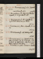Jan. 12. Su.Necromancers, p. 162. Coquette, p. 112.Lord Grenville dies. 55 ½ / 66 ½
13. M. Necromancers, 164/2. Museum; Durriuse. Coquette, p. 218. Jos. Hunter calls. 56 ½ / 67
14. Tu.Necromancers, p. 166/2. Coquette, p. 298.M W S dines; adv. Jas White. 56 / 69
15. W. Necromancers, 7 lines. Coquette, p. 376, fin. 58 / 69 ½
16. Th.Necromancers, p. 168. Kenney calls. 58 / 68
17. F. Necromancers, p. 170. Quixote, p. 329. Call on Car. Norton; adv. mrs T Sheridan, B S & E of Kerry: Jas White at tea: L Stanhope’s, w. la Stepney, miss Gore & mrs Wood. 60 / 67
18. Sa.Necromancers, çala. Museum; Faustuse. 58 ½ / 66
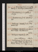Jan. 19. Su. Necromancers, p. 171. Goethe, Faust, p. 51. Meet Rogers (dinner) & Poole. 56 / 65 ½
20. M.Necromancers, p. 173. Goethe, p. 203, fin. 56 / 71
21. Tu.Necromancers, p. 176/2. Quixote, p. 380. 57 / 67
22. W. Exchequere. Quixote, p. 413.Meadowses sup. 57 / 68
23. Th.Exchequere. Quixote, p. 443. Call on A Whiten & Bain: T Campbel au soir. 59 / 69
24. F. Exchequere. Quixote, p. 480.Julian Hibbert dies .61 ½ / 67
25. Sa. Necromancers, p. 178/2. Quixote, p. 495. Call on Flather: Jas White at tea: theatre, Wedding Gowne. Hume calls.60 ½ / 67
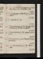Jan. 26. Su.Constipe. Necromancers, 7 lines. Quixote, p. 506. Rowbotham calls. 58 / 65
27. M.Exchequere. Quixote, p. 520. B M calls na. 60 / 69
28. Tu.Quixote, p. 572. 62 / 63 ½
29. W.Necromancers, p. 180. F R calls: dine at Hume’s, w. Dr Davis & Charles ---- 52 ½ / 62 ½
30. Th.Necromancers, p. 182/2. Quixote, Vol. II, p. 22. 53 / 64
31. F. Necromancers, p. 182. Museum; Biogr. Universellee. 54 / 64
Feb. 1. Sa.Necromancers, p. 184/2.Hume calls. 54 / 62 ½
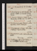Feb. 2. Su.Necromancers, p. 186/2. John Wilson calls. 52 / 62
3. M. Necromancers, p. 186. Museum; Hospiniane. Theatre, C G, repelled e: write to Bunn. 52 ½ / 66 ½
4. Tu. Museum; Hospiniane. Quixote, p. 52. Whites and mrs Miller call: T Campbel sups. Parliament meetse.55 / 68
5. W.Necromancers, çala. Museum; Luthere.N G at tea: invité, L Stanhope’s. 55 /66
6. Th. Necromancers, 1 1/2 pages. Call on Speer (Treasury): Hudsons at tea. 55 / 67 ½
7. F.Necromancers, çala. Call on Ellis; adv. Roberts. Fog, 3 days. 54 ½ / 63
8. Sa. Exchequere. Sup at Ant. White’s, w. miss Renthamshaw, Maitland & M J51 ½ / 64
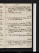Feb. 9. Su.Necromancers, 8 lines.Wilson calls: dine at T Campbel’s, w. Wilkinson, J Russel, Williams & A Campbel; adv. Williams Chronicle53 / 65
10. M. Necromancers, p. 189/2. 51 / 64
11. Tu. Necromancers, p. 190/2. Water Witch, p. 51. Sir C Aldis au soir. 51 / 62
12. W. Necromancers, p. 192/2{.} W Witch, p. 93. Dine at Jos. Robinsons, w. Burleys, capt. Addison, Perry & M W S. Letter fr. Bunn. 52 ½ / 62 ½
13. Th. Necromancers, p. 193/2. W Witch, p. 146. Mesds Winter & Rand call (Rand na): Caunter at tea; adv. Wilson. 50 / 66
14. F. Necromancers, 1/2 page. Agnes Hall at tea. 51 ½ / 64 ½
15. Sa.Necromancers, 194/2. Write to Howard Payne.Sir C Aldis calls n: theatre, Minister & Mercer; adv. O’ Hanlone. 52 /64
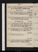Feb. 16. M. Su.Necromancers, p. 195/2. W Witch, p. 218. Call on Booth: Gaskels at tea. Thelwal dies.51 ½ / 64
17. Tu. M.Necromanceers, p. 195.Museum; Deee. Theatre, Gustavus III (69th night)e. 50 / 62 ½
18. W. Tu.Necromancers, çala. Museum; Deee. Meet Booth & Boaden(Burke).Mrs Pilcher dies. 51 ½ / 63
19. W. Necromancers, çala. Museum; Ashmolee. Woods & Forests:mrs Wright & Aldisn call: call on Mason: Wilson sups 53 ½ / 65 ½
20. Th.Necromancers, çala. Museum; Dr Tho. Smithe. W Witch, p. 320. Call on Pickens. 59 / 66 ½
21. F. Necromancers, p. 197. 54 / 65 ½
22. Sa.Necromancers, p. 198. Museum; Deee. W Witch, Vol. II, p. 100. Call on Roberts. 51 ½ / 65
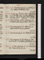Feb. 23. Su.Necromancers, p. 200. W Witch, p. 140. Call on Rickman (Bill). 53 ½ / 68
24. M.Exchequere. Museum; Deee.L Stanhope’s, w. La Charlotte Bury, La Mary Shepherd, C Sheridan, Alkali, mrs Wood, Holm. W Witch, p. 268. meet Kenney.Vardon calls n.55 / 68
25. Tu. Necromancers, 11 lines.Museum; Deee.T Campbel sups; adv. Jas White. Helen, p. 90. 54 / 65 ½
26. W.Necromancers, p. 202/2. Helen, p. 178. Call on Roberts(Sir Jas Graham). 53 / 64
27. Th.Necromancers, p. 203. Helen, p. 336. 56 / 68
28. F. Necromancers, p. 205/2.Museum; Deee. Meet Booth:F Rn & Aldis call. W Witch, p. 316. 60 / 67 ½
Mar. 1. Sa.Necromancers, p. 205. Museum ; Deee. Helen, Vol. II, p. 120. 60 ½ / 68
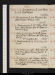Mar. 2. Su.Necromancers, p. 206. Helen, p. 274. Meet Rogers. 57 ½ / 69 ½
3. M. Necromancers, p. 207. Museum; Deee. Call on Moxonn. Helen, p. 336. 60 / 68
4. Tu.Necromancers, p. 210/2. Helen, Vol. III, p. 92. Call on Moxons: dine at Rogers’s, w. Kenney & Carey. 59 / 65 ½
5. W.Helen, p. 322, fin. N S Smith (monument, M W G) & W Moxon call: M W S dines; adv. N G. Mrs Jo Godwin dies. 61 ½ / 67
6. Th.Necromancers, p. 212/2. M W S & mrs Gaskel call. 57 / 69
7. F. Necromancers, çala. Water Witch, Vol. III, p. 136. Call on Mercier, painter: W Moxon calls. 60 / 68
8. Sa. Necromancers, çala. Museum; Hutchinsone. W Witch, p. 163. S Gent dines; adv. Wilsonn: Gaskel’s; H Martineau, Cayley, Lovet & Mrs Yates. 57 / 70
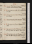Mar. 9. Su.Necromancers, çala. W Witch, p. 308, fin. Call on Pickens (bruise). 58 / 69 ½
10. M. Necromancers, çala. Call on Roberts: Wilson sups. 58 / 68
11. Tu.Necromancers, 5 lines.Museum (w. Wilson); Pitcairne. 60 / 67 ½
12. W.Necromancers, p. 214/2. Museum; Pitcairne. 57 / 67
13. Th. Necromancers, p. 215. Museum; Pitcairne. 60 ½ / 68 ½
14. F.Necromancers, p. 218/2. Museum; Fullere.Mrs Hogg dines; adv. Hudson: Uwins sups. 60 / 72
15. Sa.Necromancers, p. 218.Museum; Sir M Halee. F R calls n: theatre, Revolt of Hareme. 59 / 69
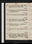Mar. 16. Su.Necromancers, 4 pp (Hale). Godolphin, p. 165. White calls na. 54 / 65
17. M.Necromancers, p. 219/2. Museum; Hackete. Godolphin, p. 307. 55 ½ / 64
18. Tu. Necromancers, 10 lines. Museum; Laude. 56 / 64 ½
19. W. Necromancers, p. 219, & 1/2 page. Godolphin, Vol. II, p. 110. Kenney at tea. 53 / 64
20. Th.Necromancers, 1/2 page. Godolphin, p. 281; Vol. III, p. 267. 53 / 64
21. F. Necromancers, çala. Godolphin, p. 307, fin. 53 / 64
22. Sa. Necromancers, 1 1/2 pages. Suffolk Street, Rogers, La C Bury, La Stepney, Hoflands, Martins, Prentis, Forster, Hill, Morton, Landseer, La M Shepherd. 55 / 65
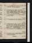Mar. 23. Su.Constipe. Necromancers, çala. Call on Gaskel. Everina expected. 53 / 67
24. M. Necromancers, 1/2 page. Quixote, p. 100.Martin’s, Joseph, Uwinses, Heaphy, Foggo, Cruickshank, Caunters, Wheatstone, miss Roberts, mrs Loudon, C Landseer, Brockedon. 56 / 66
25. Tu.Necromancers, p. 221. Call on Hudson: Gaskels at tea. 52 ½ / 63 ½
26. W.Necromancers, p. 223/2. Valperga, p. 84. 50 / 62
27. Th. Necromancers, 1 page; revise. Museum; R Baxtere. Dine at Hardwick’s, w. Morgan (Times), Clarke (Court Journal), Dilke, Dr Borroughs, & col. Invité Rickman’s. 52 / 63
28. F.Necromancers, p. 226. Valperga, p. 137. 56 / 66 ½
29. Sa. Necromancers, 10 lines. Hudson at tea. Invité Rickman’s. Deorsume. 55 / 66 ½
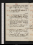Mar. 30. Su.Necromancers, p. 229. Valperga, p. 168. Call on Car. Nortonn & miss Ayrton. Douce dies .53 / 68
31. M. Necromancers, çala. Valperga, p. 226. Call on Masonn.53 / 66
Apr. 1. Tu. Necromancers, revise. Valperga, p. 293. Theatre, Challenge; adv. Spencer, Barham & Hille: Mason calls n:Meadows sups. 53 / 64
2. W. Valperga, Vol. II, p. 75: Sardanapalus. Mason calls: dine at Gaskel’s, w. W Smith, Ainsworths, Hunters & Wood; adv. Sir Geo. Cayley & nephew 57 / 64
3. Th.Necromancers, revise. Valperga, p. 140. Baylis (printer) calls: White sups. 57 / 68 ½
4. F.Necromancers, çala. Valperga, p. 190. Baylis calls: call on Mercier. L Badams at tea. Go to Presse. 55 ½ / 64
5. Sa.Necromancers, revise. Letter to Gray. Valperga, p. 249. N G at tea; adv. W Hopwood. 55 ½ / 65
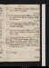Apr. 6. Su.Necromancers, revise. Valperga, p. 287. M W S & Percy dine. 57 ½ / 66 ½
7. M. Necromancers, revise. Valperga, Vol. III, p. 113. Call on Roberts & Rodd: Museum; W Lilly; adv. H Robinsone. 55 ½ / 68
8. Tu.Necromancers, revise. Valperga, p. 184. Call on Hudson:L Badams at tea; adv. Dr Aldis & Meadows. 59 / 66 ½
9. W. Necromancers, revise. Valperga, p. 269, fin. Call on Baylisn & Straker (Bunyan); adv. Baber:Baylis calls n. 55 / 66
10. Th. Necomancers, revise.Library, D C; Herbelote: theatre, Sardanapalus; Spencere:La. Stepney’s, La C Bury, La M S, Bulwer, Wilkie, T Uwins, Murray, Bentley, Jerdan, Bach, L Stanhope, C Sheridan 53 / 64
11. F.Necromancers, 1 page. Lalla Rookh, çala: Quixote, p. 124. 51 ½ / 63 ½
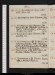Apr. 13. Su.Necromancers, 1 page. Call on Booth: Wilson sups. 50 / 64
14. M.Necromancers, revise.Museum; Lillye. 52 / 62
15. Tu.Necromancers, revise.Museum; Lillye. Mrs Gaskel calls:L Stanhope’s; La C Bury, La Stepney, La M S, Fonblanq, col. Thomson, C Sheridan & mrs Wood. 52 / 63
16. W. Necromancers, revise. Museum; Lillye. Quixote, p. 214. 55 / 64
17. Th. Necromancers, 1 1/2 pp.Mrs Wood’s, w. mrs Gaskel, mrs Grimstone, M W S, L Stanhopes, Southwold Smith, &Holm, &Atherston, Wheatstone, &Alkali & miss Macaulay. 56 / 65 ½
18. F.Necromancers, 2 1/2 pp.M W S dines; adv. Meadows & Wilson: Mercier calls. 60 / 68 ½
19. Sa. Necromancers, 1 1/2 pp. Mercier, Skiomancy,chy, w. Williams (Post) & 2.60 ½ / 68
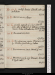Apr. 20. Su.Constipe. Revises. A Smith calls: call on Pickens. 61 / 66
21. M. Necromancers, 1 page. 61 / 68 ½
22. Tu.Constipe. Quixote, p. 240. A Smith calls: dine at Uwins’s, w. Holman, Turner, Mason, Nokes & Maturin; invité sir C Bell. 61 / 64
23. W.Necromancers, revise. 59 ½ / 67 ½
24. Th.Necromancers, revise. Museum; Lillye. Theatre, Good Looking Fellowe. 59 / 65
25. F.Necromancers, revise. Quixote, p. 316. 63 / 66
26. Sa.Necromancers, p. 231/2. Museum; Hornecke. R Taylor calls n. 60 ½ / 65
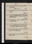Apr. 27. Su.Necromancers, 1/2 page; revise.A Smith calls. Stothard dies . 69
28. M. Necromancers, revise. Museum; Remigiuse. 66 / 68
29. Tu.Necromancers, revise. Museum; Remigiuse. Meet Surr: Uwins, & Seaton 2 call, & Hudson. 64 / 71 ½
30. W. Necromancers, 1 page. Quixote, p. 395. T Campbel calls. 68 / 72
May 1. Th. Write to E Grey. Necromancers, revise. A Smith & Hardwickn call: call on Bentley (for M W S) & miss Northcote. 68 / 69
2. F. Necromancers, 1/2 page, & revise. Museum; Hornecke. Mrs Hogg calls. 66 / 69
3. Sa.Necromancers, p. 232. White dines: mtWilson calls. 67 ½ / 69
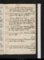May 4. Su.Constipe. Read Necromancers. Quixote, p. 444. Vauxhall Bridge. Mrs Gaskel & Bakewel au soir n. 66 ½ / 74
5. M. Necromancers, p. 234. Exhibition; adv. S Leighe: call on Hume: N G at tea. Pensions, H of Cs, 390 to 148e. 70 / 72
6. Tu. Necromancers, revise. A Smith calls: La Mary Shepherd’s; La C Bury, La Stepney, Murray, Lardner, C Sheridan, miss Campbell, mrs Pritchard (Babbage) 65 / 73
7. W. Necromancers, revise. Museum; Hutchinsone. Wilsonna & Merciern call, & Gilbert: Theatre, Fairy Slipper; adv. Jas Kenneye. 67 ½ / 71 ½
8. Th.Necromancers, revise. Museum; Mathere.Mercier calls. 66 / 69
9. F.Necromancers, proofs.Museum; Mathere. Gilbert calls: meet Wilson. 70 / 67
10. Sa.Necromancers, p. 236/2, & 1 1/2 page. Museum; Neale. L Badams & Teresa at tea. Vardon calls n. 61 ½ / 67
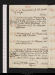May 11. Su.Necromancers, p. 238/2. Quixote, p. 500, fin. 64 / 69 ½
12. M. Necromancers, revise.Museum; Neale. Mercier calls:S Gent dines:Gaskel’s; Shepherd, Sd Smith, mrs Jamieson, L Aikin, S Austin, S G Caley, Hunter, (H Martineau), Baines, Holm, mrs Wood, Morgan. 69 / 72
13. Tu.Necromancers, p. 240.Museum; Hutchinsone. 66 / 71
14. W.Necromancers, p. 241. Museum; Dalton, adv. Rutte. M W S dines. 60 / 68
15. Th. Necromancers, p. 242. Museum; Lancashire Witches, 1612e. 65 / 73
16. F. Museum; Lan. Witchese. Meet S G Cayley (Likeness to Dalton): Gaskels & m Bakewel tea:La Stepney’s; La Sophia S, La C Bury, La M S, mrs Poulter, Bulwers, Babbage, Young actor, Edw. Landseer, C Sheridan{,}L Stanhpe,Lardner,Hayward. 65 ½ / 70
17. Sa.Necromancers, 3 pages. Call on Strakern. Review of Pol. Justice designed, May 16.66 / 61 / 72
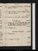May 18. Su.Necromancers, revise. A Smith calls: Write to Mason. 64 / 71
19. M. Necromancers, 1 page; Preface, 1/2 page. Letter from Mason. 65 / 68
20. Tu.Necromancers, revise. Call on Mason. La Fayette dies. 62 ½ / 68
21. W.Preface, p . 2.R C Derby calls: call on Mason; Adv. Baylis: dine at Jos. Robinson, w. T Campbel, King, miss Perry & M W S. 65 ½ / 66
22. Th.Preface, p. 3. Exchequer Act passede. 66 / 68
23. F.Preface, p. 5. 64 / 71
24. Sa.Preface, p. 6, fin. 66 / 71
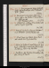May 25. Su. Necromancers, revise. A Smith calls: call on Babbage; adv. Drinkwater & W--- Jones. 62 / 70 ½
26. M. Necromancers, word. Self-Love, 5 lines. Call on Car. Nortonnit: meet Martin:Salter au soir. Mrs P H Godwin dies. 62 ½ / 68 ½
27. Tu. Sepulchrese.Crossley (Manchester) calls: call on Baylis: N G at tea. 63 ½ / 68 ½
28. W. Dine at Gaskel’s, w. Hawes’s, Bakewel, & col. Williams: A Smith & Wilson sup. 63 / 68 ½
29. Th.Margt Jones, mrs Hudson & mrs Rand call: au soir mrs Hogg & Caunters. 60 ½ / 68 ½
30. F. Call on Car. Nortonnit: meet Hayward: Babbage’s, L Stanhopes, Birkbecks, Somervilles, La Stepney, Hudson R S, & Wilkie. 62 ½ / 68 ½
31. Sa. Pantheon; adv. Mortons & Bartleyse: theatre, Henry IV, Part IIe. 63 ½ / 69
June 1. Su. Faust, çala. Wrangham & B M call: call on Booth: Jerrolds sup. 63 / 70
2. M.Review of P J, notes. B J, Discoveries, p. 30. National Gallery: meet Bernal; Necs. Necromancers published . 64 ½ / 68
3. Tu. Constipe. Necromancers, p. 44: Faust, çala. 68 / 71 ½
4. W. Review, p. 2/2. Faust, fin. National Gallery. 65 / 71
5. Th.Thoughts on Man, çala.Museum; Critical Review, 1793e. Kempson, A Smith & B Mn call: call on Moxon. 63 ½ / 72 ½
6. F.B J, Discoveries, p. 70. Call on Olliern & Bn: Margt Jones dines; adv. N G. 64 / 71
7.Sa. Review, 3 lines. Macpherson, p. 455 to 510. Call on Ollier; adv. Bentley: Babbage’s, L Stanhopes, Somervilles, Hayward, W Smith (Malthus), mrs Skirret Skinner, Drinkwater & Jones. Gaskels, au soir. 66 ½ / 71
June 8. Su. Necromancers, p. 70: Macpherson, p. çala. Meet M Gaskel. 66 / 73
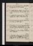9. M.Constipe. Review, 6 lines. Necromancers, p. 143. Mrs Rand, 2 to 8; adv. Ollier. A Sm. calls. 69 ½ / 72 ½
10. Tu.Constipe. Necromancers, p. 249. Call on Bedford; adv. C Wynn:Blanchards sup. 66 / 69
11. W. Necromancers, p. 286: B J, Discoveries, p. 101, fin. Jas White calls. 65 / 72
12. Th.Necromancers, p. 310: Thoughts on Man, çala. Museum; British Critic, 1793e. Star-chamber; Gaskels, H Martineau & mereat tea. 65 / 70
13. F.Review, p. 4. Dine at Ollier’s, Westbourn: meet Hayward. 66 / 70
14. Sa.Thoughts on Man, çala. Dine at Rickman’s, w. Frere, DrRigby Bunny, Paynes, Vardon, & lady, &mrs Spencer, & miss Seaton. 72 / 68
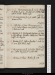June 15. Su. Necromancers, p. 304: Thoughts on Man, p. 204. Speaker (sir C Sutton) calls: call on Booth:Wilson sups. 64 / 69
16. M.Necromancers, p. 398.Cooke calls:Rickmans at tea. 67 ½ / 65 ½
17. Tu.Self-Love, 9 lines. Necromancers, p. 437. Call on Mason: mrs Gaskel, Johnson & Bakewel call. 68 ½ / 71
18. W. Review, p. 5/2. Zoological Gardens, w. mrs & A Rickmane: theatre, Coriolanus (Vandenhoff); adv. Baylise. 65 / 73
19. Th.Review, p. 6/2. Call on Speakern: seek La S S: mrs Ant. White sups. 67 ½ / 74
20. F.Necromancers, p. 465, fin: Werter, p. 65. Call on Haywardn: meet Hill. 68 ½ / 71 ½
21. Sa. Review, 10 lines. Werter, p. 168. 70 / 74
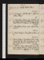June 22. Su. Constipe. Werter, Vol. II. 65 ½ / 73
23. M. Exchequere. A Smith calls na: call on La Sophia Sidney n. 68
24. Tu. Thoughts on Man, çala. A Smith calls: mrs Hogg & fille, & Jas White dine: theatre, What Wife, & Coronation; adv. Skeffingtone. 65 / 68
25. W. Thoughts on Man, çala. Sup at Reynolds’s. 68 / 72
26. Th.Revise Papers. Thoughts on Man, çala. 66 ½ / 72
27. F. Revise papers. Thoughts on Man, çala. T Campbel calls: dine at Gaskel’s, w. Southwold Smith, Johnston & Pemberton; adv. Marriot. 65 ½ / 68 ½
28. Sa. Self-Love, 1 page. Revise Papers: La. Stepney’s; Canino, La S S, La. C Bury, Bulwer, Uwins, Joseph, mrs Skirret, Skinner, miss Porter, Haywd. 63 / 72
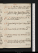June 29. Su.Self-Love, 1/2 page. Call on Gaskel’s: Mrs S Leigh & son at tea. Revise Papers. 66 / 72
30. M. Self-Love, 4 lines. Revise Papers. Call on (Saunders &)Otley :Gaskels & Johnston sup. 68 / 68 ½
July 1. Tu.Lourdisee. Walsingham, çala. Theatre, Wheel of Fortunee.64 / 72
2. W. Persian Tales, p. 54. Dyerna & Blanchard call. 67 / 73
3. Th. Persian Tales, p. 116.L K& H Ellis call. 65 / 69 ½
4. F.Persian, Tales, p. 159. M W S dines; adv. M Gaskel. 66 / 69 ½
5. Sa.Persian Tales, p. 195. British Institution{.}eL Kenney & Cha call: N G at tea. 67 ½ / 73
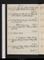July 6. Su.Self-Love, 13 lines. Persian Tales, p. 231. Call on H Martineau: meet Ryan. 69 ½ / 75 ½
7. M. Froid. Persian Tales, p. 257. Call on Roberts & Hudson: M Gaskel calls, ppc. 70
8. Tu.Chaud. Maid’s Tragedy.A Smith calls: L K & Charles dine. Althorp & Grey resigne. 68 ½ / 71
9. W.Life of Siddons, Vol. I. Call on Ant. White: A W on M J. 69 ½ / 72
10. Th.Siddons, Vol. II. Tic Douloureux, 3 dayse. 66 ½ / 73
11. F. Persian Tales, p. 306, fin.F M Reynolds calls n. 65 / 72
12. Sa.Revise Sir T More. Wife for a Month, act 1.Mrs Hogg at tea. 69 ½ / 75 ½
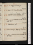July 13. Su.Wife for a Month, fin. 69 ½ / 70
14. M.Rule a Wife. Call on Mansfield. Melbourne Treasurye.64 / 70 ½
15. Tu.Revise Sir T More. Bonduca, act 1. 65 / 72
16. W. Bonduca, fin. Ollier & F R call n: theatre, Beau Nashe. 65 ½ / 76 ½
17. Th. Valentinian, act 1. 69 / 73
18. F. Valentinian, fin. Call on miss Northcote. 71 / 72
19. Sa.Stage, w. Edward VIe. Dine & sleep at Harrow. Rain. 67[Not in London]
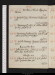July 20. Su. Vomition, 6 timese. Stage from Harrowe. / 71[Not in London]
21. M.Write to E Grey. Humorous Lieutenant, act 1. 72 ½ / 76 ½ / 66 / 69
22. Tu. Humorous Lt acts 2, 3. Call on A White, for M J. Lobrot to L Ke. 65 ½ / 69
23. W. Humorous Lieutenant, fin. A Smith calls n: call on La S Sidneynit & Jekyln. 69 / 73 ½
24. Th.Send to Treasury. Tyrannic Love, acts 1, 2, 3. Spanish Cortes opene. 70 / 72
25. F. Letter from Grey. Lodore, p. 125. Jas White sups. meet Vardon. Coleridge dies . 69 / 72
26. Sa.Lodore, p. 300; Vol. II, p. 176. Gaskel sups. Tyrannic Love, fin. 69 / 72
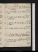July 27. Su.Lodore, p. 297; Vol. III, p. 200. Life of Swift, p. 32. Call on Booth: F R calls n. Sheridan. 68 / 72
28. M. Life of Swift, p. 144: Lodore, p. 310, fin. 67 ½ / 72
29. Tu.Swift, p. 254: Simple Story, p. 91. A Smith calls. 72 ½ / 74
30. W. Swift, p. 358: Simple Story, p. 120. Call on Rogersn. 69 ½ / 72 ½
31. Th. Swift, p. 488, fin: Simple Story, p. 170. 67 / 72
Aug. 1. F.De Senectute, c. 7. Simple Story; p. 216. Theatre, 1/2 R Felicity, & Wife’s Mothere. 68 / 73
2. Sa.Meditate Life of Swift, au lit. Simple Story, p. 257. Meet T Ht. 68 / 71
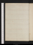XXXII
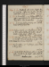Aug. 3. Su. Plutarch, Cato Censor: Simple Story, p. 296, fin. Call onmrs Ayrton: L K, Cha, Caunters & miss James at tea. 65 ½ / 73
4. M.De Senectute, c. 10: Nature & Art, p. 30. Call on Ant. Whiten, w. M J : M W S, Percy & mrs Hogg dine; adv. Bonnechose. 72 ½ / 70 ½
5. Tu.Swift, çala. Nature & Art, p. 52. A Smith,M W S & Percy call:N G at tea. 74 / 70 ½
6. W.Nature & Art, p. 96.St Katherine’s Docks, w. M J: call on Southwood Smithn: sup at M W S’s; Eaton Street. Gifford, cala.M J for Hern[ ] Baye.70 / 69 / 76 ½
7. Th.Coleridge, Lit. Life, çala:Nature & Art, p. 136, fin. Dine at Caunter’s, w. Geo. C; adv. Wilson,Willis/ Am.n, & mrs Shepherd. 69 / 71
8. F.De Senectute, c. 16: Massinger, çala. M W S & Percy dine. 72 ½ / 70
9. Sa.Write to M J. Bondman, acts 1, 2.Jas Wh. calls: Fenn’s, &c, for Swift: call on Ant. Wh, medicine. Braham dies.71 ½ / 74 / 69
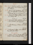Aug. 10. Su.Bondman, acts 3, 4: C Lamb, çala. Call on mrs Picken(Andrew for Scotland)e. 68 / 70
11. M. Write to M J. Bondman, act 5: C Lb, cala. Dine at (M W S’s), w. Mrs Hogg & Percy. Irish Tithe Bill rejd, Lds, 189 to 122.)e71 ½ / 72
12. Tu.Review, p. 6. Duke of Milan, acts 1, 2. Chas Kenney calls. See June 19. 68 / 72 ½
13. W. Review, p. 9/2. Duke of Milan, acts 3, 4, 5. Dine atM W S’s; adv. miss Gower. 69 ½ / 74 ½
14. Th.Cold. Review, p. 9. Picture, act 1. Call on Roberts. 65 / 76 ½
15. F. Exchequere. Picture, act 2.M W S & Percy dine; adv. B Aldis. Prorogatione 72 / 69
16. Sa. Picture, acts 3, 4. F R calls (Athenæum): theatre, 1/2 Figaro, & Cure for Ht Ache, act 1e. 67 / 74
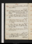Aug. 17. Su.Review, p. 10/2. Picture, act 5. Call on La. Stepney. 71 / 73 / 70
18. M.Exchequer Payment. Call on Hudson: dine at M W S's, w. mrs Hogg & fille. meet W Perry. (adv. Speaker, &c na)72 ½ / 71
19. Tu. (Bell, 5 A M, Dream)e. Spirit of Age, çala.John Hume, Registrer, Edinburgh, & W Perry call. 72 ½ / 70
20. W.Write to M J. Spirit of Age, çala. Dine at Rickman’s, w. Cowel, Epps, Payne, Vardon & May. 69 ½ / 74
21. Th. Notes on Journals. Call on G Dyer: theatre, 1/2 R Felicity, & Married Life; adv. Jerdane. Coleridge, Poems. 66 / 73
22. F. Notes on Journals. Spirit of Age, çala. M W S & Percy dine. 69 / 72 / 67
23. Sa.Letter to Melbourne. Lettres Persanes, p. 46. Defense of Poesy, Xtn Morals, çala. Caunter calls: Esdailes. 68 / 66 ½ / 74
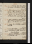Aug. 24. Su. Theodric. Rain. Dine at Caunter’s, w. Geo. C; adv. Shepherds & Holmes. 69 / 70 / 64 ½
25. M. Notes on Journal, 1 paragraph: Review, p. 11. Dine at M W S’s; adv. mrs Wyndham Lewis & Geo. Beauclerk. 66 / 72
26. Tu.Review, p. 12. Quarterly (Coleridge, &c). Hudson at tea. Lobrot & Jones call. 66 / 73
27. W. Letter to Melbourne. Woolston, çala. Call on Melbourne (to enquire); adv. mrs Skinner; w. her, Pantechnicon. 69 / 65
28. Th.Review, p. 13. Woolston, çala.M W S at tea. 64 ½ / 73
29. F. State of Retribution, au lit. Ditto, p. 1. Call on Young, w. letter: call on Fenn. au soir. Plan Retribution. 71 / 67 / 74 ½
30. Sa. Languide. Retribution, p. 2/2. Write to M J. Woolston, çala. 71 ½ / 68 / 74
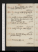Aug. 31. Su. Nervouse. Woolston, çala. Call on Booth: M W S & Percy dine. 68 / 67 ½ / 74
Sep. 1. M.Laxnesse. Scott, Life of Swift, p. 90. 71 / 69 / 75
2. Tu.Scott, p. 171. Dine atM W S’s, w. mrs Hogg; adv. mrs Wyndham Lewis, miss Gregor & miss Gore. Melbourne in towne.71 / 66 ½
3. W.Scott, p. 380. M J at homee. M J at homee.65 ½ / 72 / 67
4. Th.Scott, p. 505, fin. Call on Maule. 71 / 69
5. F. Constipe. N G,M W S & Percy at tea; adv. Jas White & Kenney. 71 / 72
6. Sa.Miserrimus, pp. 201. 71 / 68 ½ / 73 ½
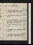Sep. 7. Su.F Wright calls. 67 ½ / 74
8. M.Lucide. Holcroft, Memoirs, p. 104. Call on Maule: M W S & Percy at tea. 68 / 73
9. Tu.Colicus Parvuse. Holcroft, p. 300; Vol. II, p. 150. 67 ½ / 72
10. W. Colicuse. Retribution, 12 lines.G Dyer & Jas White call: theatre, Queen’s Champione. Ht, p. 283; Vol. III, p. 103. 67 / 72
11. Th. Hazee. Holcroft, p. 320, fin. Kennies at tea.69 ½ / 72
12. F. Retribution, p. 3/2. Pope & Swift, Letters. Laxnesse. 69 / 73 ½
13. Sa.Pesanteur (not felt for mos)e. Pope & Swift, Letters. M W S & Percy at tea. 67 / 72
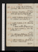Sep. 14. Su.Constipe. Letter to Melbourne. Lord Fanny. Call on M W S; adv. mrs Hogg. 66 ½ / 72
15. M. Medicinee. Middleton, çala. S Gent dines; adv. N G (mrs P H G, death). 65 / 75 ½
16. Tu.Constipe. Middleton, Life of Cicero, p. 34: Blackwel, Court of Angs, p. 38. 67 / 73 ½
17. W.Constipe. Middleton, p. 82: Alexander the Great. Warm weather, 6 28 days. 68 ½ / 73 ½
18. Th. Fog. Write to Melbourne. Nero. Sup at Reynolds’s, w. F. 70 / 73
19. F. Fog. Letter from Melbourne. Manfred. Call on miss Northcote. Lobrot & Jones call. 71 / 73
20. Sa.Letter to Melbourne. Life of Pope, p. 70. Theatre, 1/2 Married Lifee. 69 ½ / 73
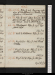Sep. 21. Su. Pope, p. 104. Hargrave calls: dine at Rowbotham’s, w. 2 Booths, Hunt, Lissabura, & D Cameron. 73 / 71 / 74
22. M. Pope, p. 126. Call on Roberts: Wood &Nevinson call: mrs Hogg & fille dine; adv. Hudson. Write to Melbourne. 68 / 72
23. Tu. //Exchequere. Pope, p. 196. Hargrave sups. 64 ½ / 72
24. W. Write to Melbourne. Pope, p. 278. 65 ½ / 72
25. Th. Virgil, Ecl. I: Pope, p. 338. Meet Morton. 66 ½ / 72
26. F. Virgil, Ecl. II, III: Pope, p. 432. Caunters & Jameses at tea. 68 ½ / 72
27. Sa. Virgil, Ecl. IV. Pope, p. 585, fin. 69 ½ / 67 / 76
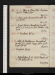Sep. 28. Su.Essay on Man, Pope.Hargrave au soir. Virgil, Ecl. V.69 ½ / 73
29. M.Pope, çala.Bonnechose calls. Virgil, Ecl. VI.66 ½ / 73
30. Tu. Virgil, Ecl. VII: Unnatural Combat, acts 1, 2, 3: Pompeii, Vol. I. Theatre, 1/2 Shylocke. 67 / 72
Oct. 1. W.Pompeii, Vol. II. 66 / 73
2. Th.Letter to Melbourne. Unnatural Combat, fin: Fatal Dowry, acts 1, 2, 3, 4. Virgil, Ecl. VIII. 64 / 70 ½
3. F.Pompeii, Vol. III. 64 / 72
4. Sa. Retribution, p. 4/2. Fatal Dowry, act 5: Old Debts, act 1, 2. 67 ½ / 73 ½
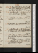Oct. 5. Su.Fog. Old Debts, fin. Meet Galloway: dine at A Whites, w. 2 James & 2 Geo. Whites, & Feetham. 66 ½ / 72
6. M.Retribution, p. 6/ 2. City Madam, act 1, 2, 3. A Smith calls: N G at tea. 66 / 72
7. Tu.Retribution, p. 7. Hudson at tea; adv. A Smith. 68 ½ / 73 ½
8. W.Retribution, p. 9. City Madam, act 4. 67 ½ / 74
9. Th.Retribution, p. 10. City Madam, act 5. Latham calls: call on Roberts & Bedford. 69 / 74
10. F.Retribution, p. 11. Never Vext, acts 1, 2. Call on Roberts, Bedford & Wadman. Send to Treasury. Revolution of Exchequeree.65 / 72
11. Sa.Retribution, p. 12. Never Vext, fin. Call on Roberts & Bedford. 61 / 70
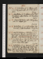Oct. 12. Su.Retribution, p. 15/2. Appius, acts 1, 2, 3. Hargrave calls: L K & Chasapres diner. 62 / 70
13. M. Retribution, p. 17. Appius, act 4. Meet Humphries: call on Hudson: mrs Hogg dines; adv. Hudson. 64 / 70
14. Tu.Fievrée. Pol. Justice, çala. Fate of Capua, acts 1 & 2: Appius, fin. 63 ½ / 72
15. W.Retribution, p. 20. Fate of Capua, fin. Museum; Scott & Middletone: Emily dines. 63 ½ / 70
16. Th.Write to Melbourne. Retribution, p. 22. Meet Perkins: theatre, 2/5 Richarde. Fire; Aldis calls ne: A Smith & Meadows sup: Blanchards late na. Lords & Commons burnede. 62 ½ / 68
17. F.A C, Burns, p. 92. N Gn, Boothn, Rickman, Lobrot & mrs Hogg call: L K at tea; adv. Jerrold. Blanchard calls n. 69 / 66 ½
18. Sa.Retribution, p. 23. Burns, p. 132. Call on Rickman: Jas White calls: M W S & Percy dine; adv. mrs Skinner & Ja. Porter: theatre, Regent, & Secret Service; adv. Linc. Stanhope, Forster & Spencere. Hume. Wilson. 63 / 70
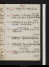Oct. 19. Su.Preface, p 1/2. Burns, p. 204.59 ½ / 67 ½
20. M.Preface, p. 4/2. Burns, p. 232: Edin Review, çala. Call on sir J Newport & Bulley. 63 / 69
21. Tu.Retribution, p. 24. Burns, p. 269. F R calls na: Tootal at tea. Earl of Derby dies .62 / 67
22. W. Preface, p. 7/2. Burns, p. 324. A S & Hudson call. 61 ½ / 67
23. Th.Preface, p. 9/2. Burns, p. 384, fin; Poems, çala. Latham calls. (menace). 62 / 69
24. F.Preface, p. 10/2. Burns, çala. Emily & mrs Hogg call: call on miss Gore. Cold, 3 days.54 / 63
25. Sa.Preface, p. 12/2, fin. Burns, çala: Wilson calls. 52 / 66
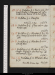Oct. 26. Su.Probation, p. 2. Burns, çala. Mrs & miss Martinna & Hargraven call: call on Pickens; adv. Evanses: L K & Chas at tea. 52 / 67
27. M. Probation, p. 3. Manfred. Relaxed, 3 days.e56 / 66
28. Tu.Probation, p. 6/2. G Dyer calls na: And. Picken sups. 59 ½ / 67
29. W. Probation, p. 7. H Bulwer, p. 43. Theatre (Manfred); write to Bunne. Aldis calls. 58 / 65 ½
30. Th.Probation, p. 9/2. H Bulwer, p. 225. Scharf dines. 59 / 69 ½
31. F. Probation, p. 11. H Bulwer, p. 269. Theatre, Manfred; adv. Murraye. Advertisement, 1/2 page. 61 / 67 ½
Nov. 1. Sa.Probation, p. 13. H Bulwer, Vol. II, p. 71. Hamilton Rowan dies .62 ½ / 74
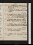Nov. 2. Su. Probation, p. 15. H Bulwer, p. 170. Hargrave calls: Emily dines: call on Booth; adv. Sutherland. 62 / 70
3. M. Probation, p. 16/2. H Bulwer, p. 294. Call on G Dyer. 62 ½ / 70
4. Tu.Probation, 10 lines. H Bulwer, p. 250, fin. Call on Bulley (twice); Newport writes: call on A Gore: B M calls: Wilson sups. 60 / 70
5. W. Probation, 1 page. Cain, act 1. Call on Bulley (treasury-minute): N G & A S call. 66 ½ / 72 ½
6. Th.Probation, 2 pages. Call on Register, Treasury. Theatre, Cato; adv. Linc. Stanhopee. 65 / 72
7. F.Probation, 1 page. Write to Hodgets. Call on Register, Treasury. 69 ½ / 73
8. Sa. Probation, revise. Cain, acts 2, 3. A Sm. calls. 62 ½ / 71
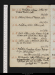Nov. 9. Su.Probation, 2 pages. Letters of Eminent Persons, çala. 63 ½ / 68
10. M.Letters of Eminent Persons, çala. 62 ½ / 67 ½
11. Tu.Probation, revise. Letters, çala. 57 / 68 ½
12. W.Wind. Letters, çala: Heaven & Earth. Hudson calls: S Gent dines:Wilson sups. Cold, 3 days. 63 / 69
13. Th.Gibbon, çala: 1/2 Deformed. Call on Martin; adv. Brockedon. 59 ½ / 67
14. F.Probation, transpose 1 page. Deformed, fin. Call on A Goren. Ministers dismissede.57 ½ / 66 ½
15. Sa. M Chronicle. Letter to Melbourne. Letter from Baring.Call on Bulley. Theatre, Red Mask; adv. Linc. Stanhopee. Jas Heath dies. 59 ½ / 65 ½
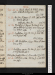Nov. 16. Su.Dark. Write to P H G. Gray, çala. A Smith & Hargrave call. 61 ½ / 68
17. M.De Foe, Plague, p. 108. Call on Bulley: Emily dines.Wellington, Home Sece.59 / 67
18. Tu.Probation, 1 1/2 pages. De Foe, p. 132. Call on A Whiten, w. M J: mrs Hogg at tea: Wilson sups. 59 ½ / 69
19. W.Probation, 3 pp. De Foe, p. 160. Daniel & S Gent sup. 64 ½ / 62 / 70
20. Th. Cold. Probation, 1/2 page. Dine at Caunter’s, w. M J. 58 / 65
21. F.Probation, revise. De Foe, p. 192. Call on miss Northcotena.Wellington, Treas) Lindhurst, Chancellore. 59 ½ / 67
22. Sa. Contrition, çala. De Foe, p. 248. Wilson sups. 57 ½ / 67
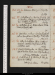Nov. 23. Su. Rhumee. Revenger’s Tragedy, act 1. 62 / 69
24. M. Contrition, p. 2. De Foe, p. 262. Call on Bulley & H Palmern: Mrs Picken at tea: invité á Blessinton.
Deorsume.60 / 69
25. Tu. Contrition, p. 4. Blanchards, Meadowses, & Emily sup. 70
26. W. Contrition, 12 lines. Case for Newporte.Call on Humphries & Bulley: Peak calls. Deorsume.58 ½ / 64
27. Th.Letter to La. Sophia. Call on Bulley & Newport: Caunters & miss James at tea. Contrition, çala. 58 / 69
28. F.Write to Wellington, La. Sophia, & M W S. Call at Bolton Street, & on Miss Northcote. Letter from Wellington.59 / 68
29. Sa.Contrition, p. 6/2. De Foe, p. 287, fin. Call on mrs A White. Letter fr. La. Sophia.62 ½ / 68 ½
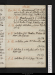Nov. 30. Su.Advertisement (Oct. 31), 1 p. call on Booth: dine at A White’s, w. frere & femme, G Whites, Chaffey, Maitland, & Peppercorn. 59 / 66
Dec. 1. M. Advertisement, p. 2: Contrition, p. 7/2. G Dyer calls: Blessington’s, w. 2 Caunters, Dr Beattie, D’Orsay, & another. 62 / 67
2. Tu.Constipe. Contrition, 9 lines. Pity She, act 1, 2/2. 60 / 67 ½
3. W. Contrition, p. 8. Theatre, Modern Honour; adv. Spencere. 63 / 68
4. Th.Contrition, çala. Mrs Hamilton calls. 64 ½ / 69 ½
5. F. Contrition, p. 11. Pity She’s, act 3. N G & Wilson call. 62 / 69
6. Sa. Contrition, p. 13, & 1/2 page. F R calls. 61 / 69 ½
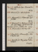Dec. 7. Su.Contrition, p 1 page: Atonement, p. 2/2. Wilson sups. 63 / 69
8. M.Atonement, p. 2. Call on Blessinton. 63 ½ / 69
9. Tu.Atonement, p. 4/2. M Jones calls: Esdle’s for M W S. 64 / 67
10. W.Atonement, p. 5/2. Rickman & A Smith call: call on Bulley: Jas White tea and sup. Peel, Chanc. Exc.e) Alex. Chalmers dies . 62 / 69
11. Th. Atonement, p. 7/2. Mrs Hogg calls. 57 ½ / 67 ½
12. F.Character, p. 1: Atonement, p. 7. Aldis & Meadows call. 60 / 65
13. Sa.Character, p. 3. Percy dines: theatre, Richard IIe. 61 / 59 / 67
Dec. 14. Su. Character, p. 5. Hargrave sups. 59 / 57 ½ / 65
15. M. Character, p. 7. Hudson at tea: theatre, 1/2 Othelloe. Peel, Treasurye. 63 ½ / 61 / 67
16. Tu. Character, p. 8. Old Men’s Tales, p. 38. M W S dines; adv. Percy; sleep, King’s Arms. F R calls na. 56 / 67
17. W. Character, p. 9. O M’s Tales, p. 178. Dine at Blessington’s, w. La Morton, Mulgrave, D’Orsay, H Bulwer, T Duncombe, Fonblanq, Jerdan, Med. 56 ½ / 66
18. Th.Write to La. Sophia. Character, p. 10/2. Old Men’s Tales, p. 307. Call at Bolton street. 58 / 65
//19. F.Character, p. 12. Letter to L Badams , on Lobrot. O M’s Tales, Vol. II, p. 63. Five Rickmans at tea. 58 / 66
20. Sa. Character, p. 13/ 2. Old Men’s Tales, p. 144. Meadows sups. 56 / 68 ½
Dec. 21. Su. Character, p. 15. Old Men’s Tales, p. 257. 60 / 70 ½
22. M. Character, p. 16. Museum; Tertulliane. Old Men’s Tales, p. 308, fin. Emily dines; adv. mrs Leigh. Prince Hoare dies63 / 65
23. Tu. Constipe. Princess, p. 10060 / 66
24. W. Character, p. 18. Princess, p. 176. Lethargye. 57 / 66
25. Th.Character, p. 19. Princess, p. 230. Dine at Wood’s, w. Stanhopes, M W S & P, Alkali, Lawrence & Jones; adv. Holm & Atherston. 59 / 66
26. F. Character, 1 page. Princess, p. 340. Call on Bulley. 59 / 67
27. Sa. Character, çala. Princess, Vol. II, p. 90.o Cha. Lamb dies.60 / 68
Dec. 28. Su.Character, p. 20. Princess, p. 172. Rogersna, Rickmansna & Wilson call. Hudson’s. Giddinesse. 58 / 68
29. M.RogEssays, çala. Princess, p. 293. Parliament dissolvede.57 / 64
30. Tu. History, p. 3/2. Princess, p. 332; Vol. III, p. 77. 57 / 67
31. W. History, p. 4. Princess, p. 112. A Smith & J Jones call: call on Moxon. 64 / 69 ½
Contact --  -- Cookies/Privacy
-- Cookies/Privacy